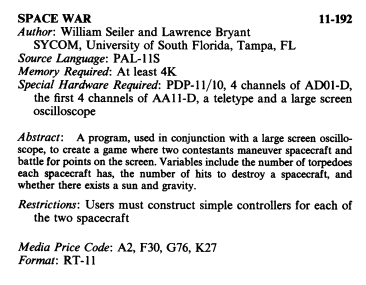
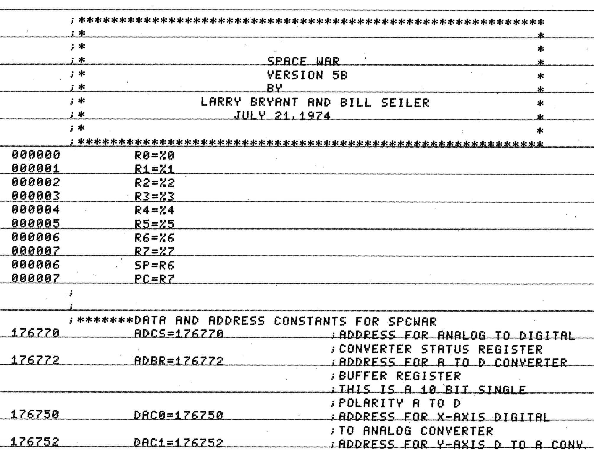

Spacewar on the PDP-11: Bryant, Seiler and the GT40
By the early 1970s Spacewar! had jumped off the PDP-1 and onto the next generation of DEC hardware. In 1974 two programmers, Larry Bryant and Bill Seiler, wrote a PDP-11 version for the GT40 graphics terminal and submitted it to the DEC users' group, DECUS, as program 11-192. It is a port in the fullest sense: a fresh implementation in PDP-11 assembler, driving DEC's own vector display, carrying the 1962 game forward onto the machine that would define minicomputing for the rest of the decade.
A new machine for an old game

A near miss with oblivion

The recovered source is preserved here as a scanned PDF of the original listing. The contemporary tooling it depends on, the PDP-11 paper-tape assembler and utilities, is documented in DEC's PDP-11 Paper Tape Software Handbook (DEC-11-XPTSA-B-D), which describes the PAL-11S assembler and LINK-11S linker used to build programs of exactly this kind.
From scanned listing to running code
The version was returned to working order by Mattis Lind in 2021. Working from Seiler's scans, he used a combination of OCR and manual transcription to turn the printout back into source text, then fed it through the period PAL-11S assembler under emulation. The transcription was unforgiving: as he records, "numerous errors were detected already when trying to get the files pass the syntax check", and every listing had to be compared byte-for-byte against the original scans. Linking exposed further undefined symbols that had to be resolved against the FPMP-11 floating-point package.
Lind also had to adapt the program to the hardware he actually owned. The original drove DEC's analog subsystems (the AD01 / AA11), so for his own machine he reworked the I/O for the single-board AR11: shifting its 10-bit converters to stand in for the original 12-bit ones, repurposing the display's ERASE bit for Z-axis (brightness) control because the AR11 lacks a third DAC, and running it in unipolar mode so that ordinary joystick potentiometers would work. He built the controllers themselves "from a handful of items found on AliExpress". The result runs Spacewar! on an X-Y oscilloscope with the authentic phosphor afterglow of a vector screen.
"The original Spacewar! game ... was ported to PDP-11 architecture by Bill Seiler and Larry Bryant in 1974 ... After decades, DECUS discarded the source materials. Fortunately, Seiler retained copies and provided them to the repository maintainer as scanned documents." From Mattis Lind's SPACEWAR repository.
The transcribed source, build instructions and supporting tools are published in Mattis Lind's SPACEWAR repository, with the AR11 test tools in a companion repository. The work was written up by Hackaday in May 2021.
The fragility of the source
The PDP-11 version sits at the meeting point of the two halves of this project. As a port, it shows Spacewar! moving forward in time, off the PDP-1 and onto the hardware of the 1970s, gaining mines and a "wild variable" along the way. As a restoration, it shows what it now takes to read that code at all: an OCR pass, a byte-for-byte collation against a forty-year-old printout, a period assembler run under emulation, and a hand-built controller. The text we study is not simply "the 1974 source"; it is a 2021 reconstruction of a 1974 source that very nearly did not survive. For a critical reading of code, that gap between the artefact and its recovery is part of the object.
References
- Larry Bryant and Bill Seiler, PDP-11 Spacewar! (DECUS 11-192, 1974). Scanned listing: SPCWAR-1974-bryant-seiler-pdp-11.pdf.
- Mattis Lind, SPACEWAR (transcription, build and AR11 adaptation, 2021); pdp11-ar11-tester.
- "Spacewar! On PDP-11 Restoration", Hackaday, 14 May 2021.
- DEC, PDP-11 Paper Tape Software Handbook (DEC-11-XPTSA-B-D), for the PAL-11S assembler and LINK-11S linker.